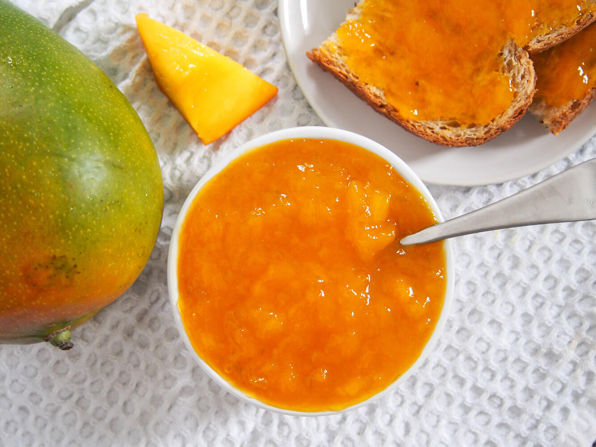

Mango Jam
Home

Description
This mango jam goes great with toast
yap fest about the jam ...
Ingredients
- 2 cups of diced mango (1-2 mangoes)
- 1/2 cup of sugar
- 1 tablespoon of lime juice
- 1/2 lime zest optional
Steps
- dice your mangoes into small cubes
- place your mangoes and other ingredients into a saucepan
- while stirring, bring to a boil then let simmer for 20-30 mins